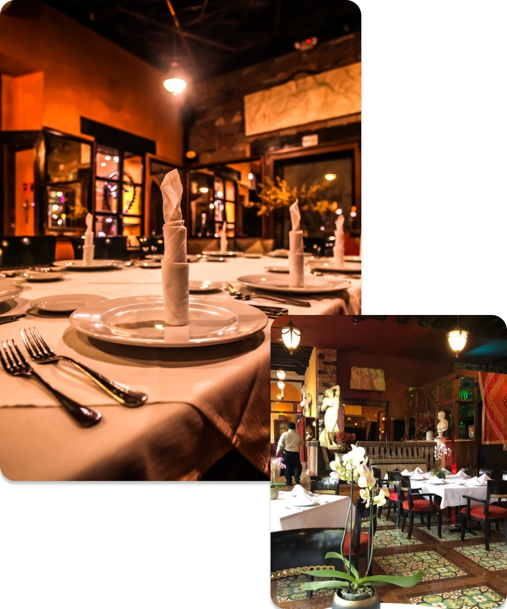

El ambiente
Un salón cálido pensado para cenas largas.



★★★★★
El ragù de las tagliatelle merece el viaje por sí solo. El servicio conoce cada plato de la carta y lo explica sin solemnidad.
★★★★★
Reservamos para ocho personas y cada plato llegó a tiempo y en su punto. La carta de vinos es honesta, no solo cara.
★★★★☆
El branzino es excepcional. La única espera fue por una mesa junto a la ventana, que valió la pena.